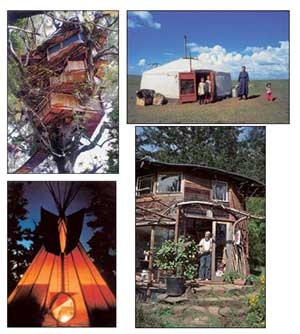

Right: A 1937 Chevrolet "Gypsy Wagon" owned by Jack Fulton. Top: Bill Coperthwaite's personal twist on the yurt design. Bellow: The Hallig homes of northern Germany are built above sea level on artificial mounds of earth to withstand high tide. This home looks much like a lonely ship lost at sea.